This repository contains STL files for Gridfinity UltraLight bins. These bins are designed to be lightweight and modular, making them ideal for organizing your workspace. Below, you will find a categorized list of available bins, along with their respective images and download links.
Please note: The provided links are compatible with OrcaSlicer 2.3.0. They may not work as intended with OrcaSlicer 2.4.0 or later versions.
Bins 6 heigh
6-height bins are the default size, perfect for storing larger items while maintaining a compact and organized setup. Explore the available options below to find the right fit for your needs.
| Size | Image | 1x | 2x | 3x | 4x | 5x | 6x | 7x | 8x | 9x | 10x |
|---|---|---|---|---|---|---|---|---|---|---|---|
| 1 |  |
25.1 mm 1x1x6_noscoop 1x1x6 |
19.5 mm 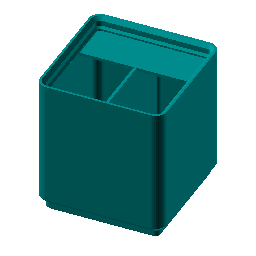 |
||||||||
| 2 |  |
19.5 mm 2x1x6_noscoop 2x1x6 |
40.5 mm |
26.7 mm 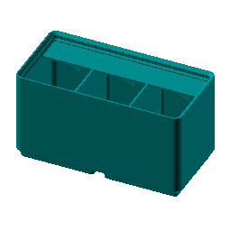 |
19.8 mm 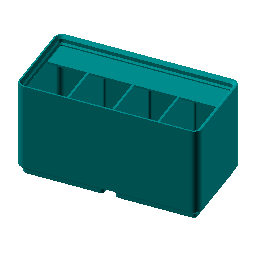 |
||||||
| 3 |  |
26.7 mm 3x1x6_noscoop 3x1x6 |
61.5 mm 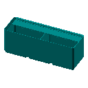 |
40.7 mm |
30.2 mm 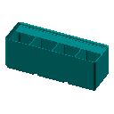 |
24.0 mm 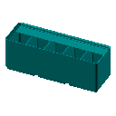 |
19.8 mm 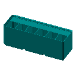 |
||||
| 4 | 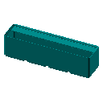 | 24.0 mm 4x1x6_noscoop 4x1x6 |
82.5 mm 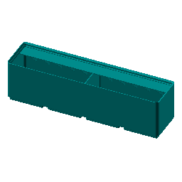 |
54.7 mm 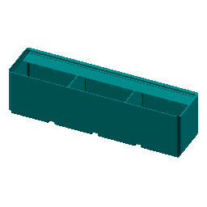 |
40.8 mm |
32.4 mm 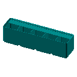 |
26.8 mm 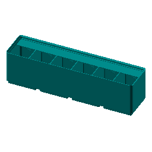 |
22.9 mm |
|||
| 5 | 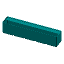 | 22.9 mm 5x1x6_noscoop 5x1x6 |
103.5 mm 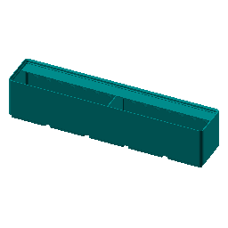 |
68.7 mm 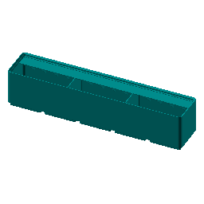 |
51.2 mm 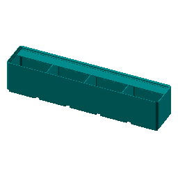 |
40.8 mm 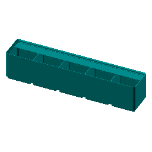 |
33.8 mm |
28.9 mm |
25.1 mm 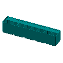 |
22.2 mm 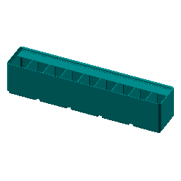 |
19.9 mm 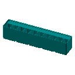 |
| 6 | 25.1 mm 6x1x6_noscoop 6x1x6 |
124.5 mm 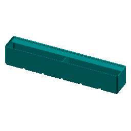 |
82.7 mm |
61.8 mm 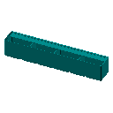 |
49.2 mm |
40.8 mm |
34.9 mm |
30.4 mm |
26.9 mm 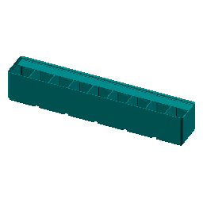 |
24.1 mm 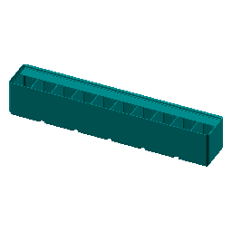 |
Bins 3 Height
3-height bins are a versatile choice for organizing small-sized items. They strike a balance between capacity and compactness, making them suitable for a variety of uses. Browse the options below to discover the perfect bin for your setup.
| Size | Image | 1x | 2x | 3x | 4x | 5x | 6x | 7x | 8x | 9x | 10x |
|---|---|---|---|---|---|---|---|---|---|---|---|
| 1 | 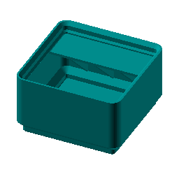 | 25.1 mm 1x1x3_noscoop 1x1x3 |
19.5 mm 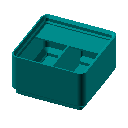 |
||||||||
| 2 | 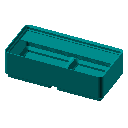 | 19.5 mm 2x1x3_noscoop 2x1x3 |
40.5 mm 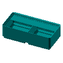 |
26.7 mm 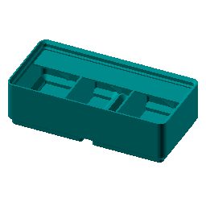 |
19.8 mm 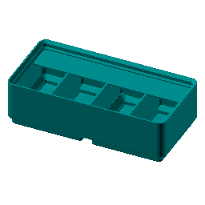 |
||||||
| 3 | 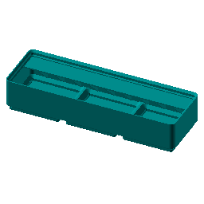 | 26.7 mm 3x1x3_noscoop 3x1x3 |
61.5 mm 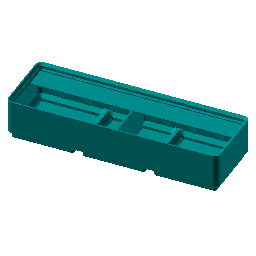 |
40.7 mm |
30.2 mm 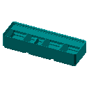 |
24.0 mm |
19.8 mm |
||||
| 4 |  |
24.0 mm 4x1x3_noscoop 4x1x3 |
82.5 mm 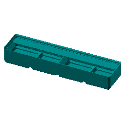 |
54.7 mm 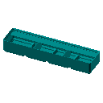 |
40.8 mm 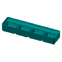 |
32.4 mm 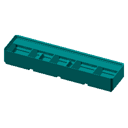 |
26.8 mm |
22.9 mm 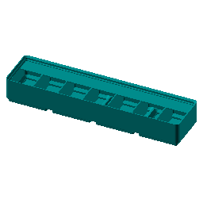 |
|||
| 5 | 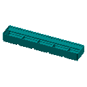 | 22.9 mm 5x1x3_noscoop 5x1x3 |
103.5 mm 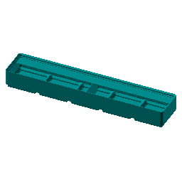 |
68.7 mm 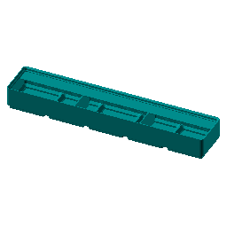 |
51.2 mm 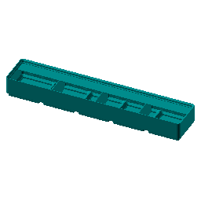 |
40.8 mm 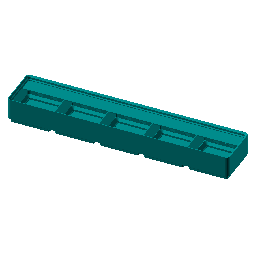 |
33.8 mm 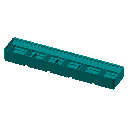 |
28.9 mm 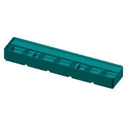 |
25.1 mm 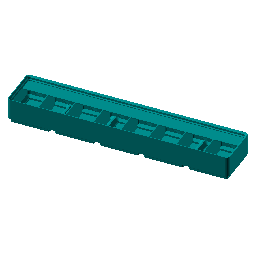 |
22.2 mm |
19.9 mm |
| 6 | 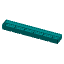 | 25.1 mm 6x1x3_noscoop 6x1x3 |
124.5 mm |
82.7 mm |
61.8 mm 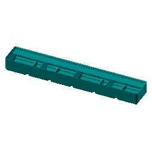 |
49.2 mm 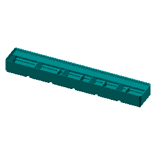 |
40.8 mm 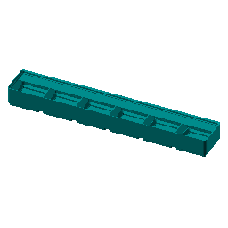 |
34.9 mm |
30.4 mm |
26.9 mm |
24.1 mm |